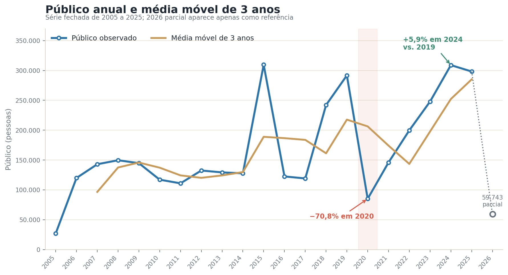
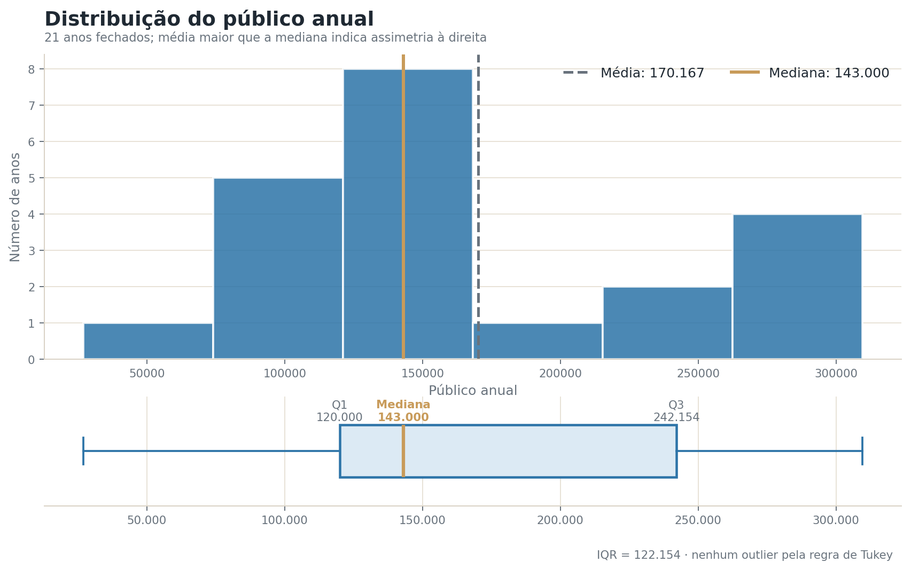
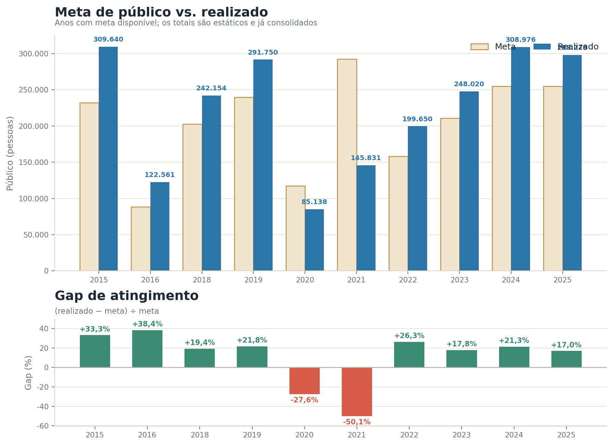
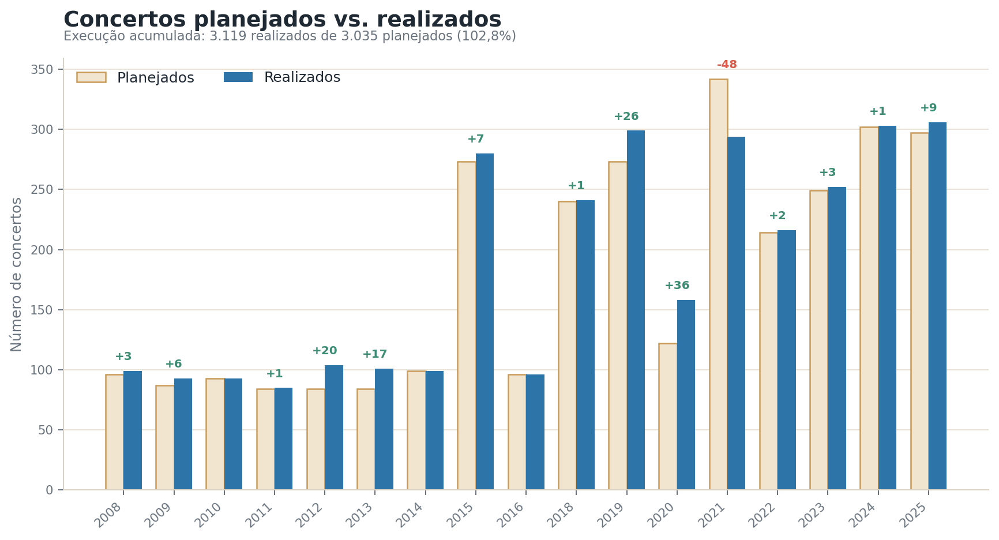
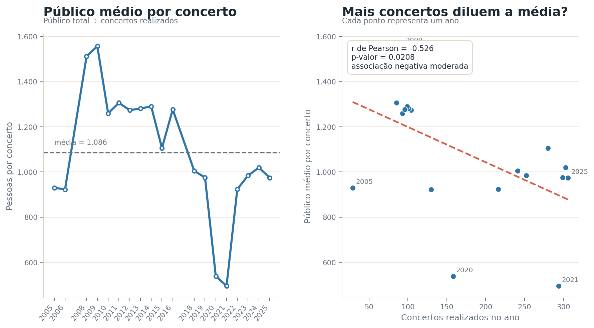
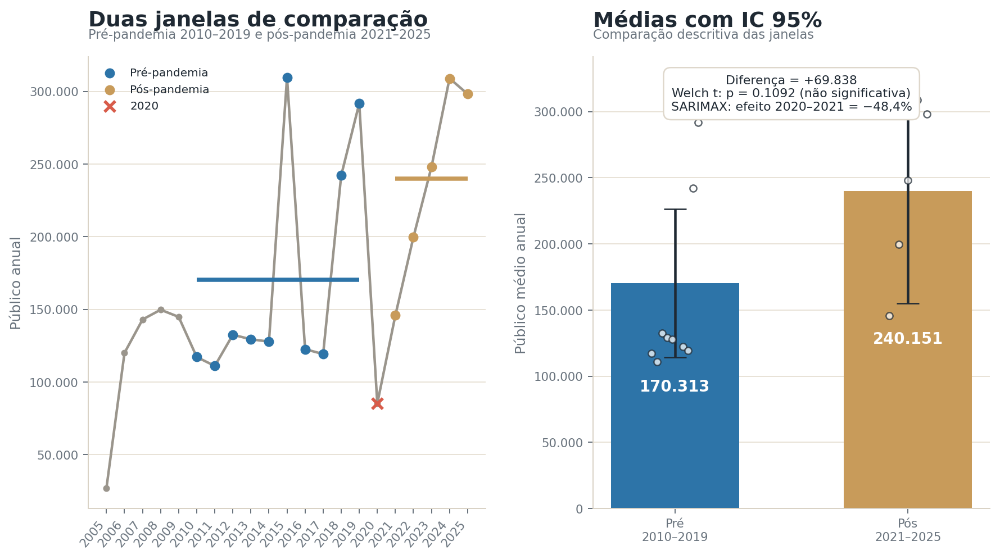
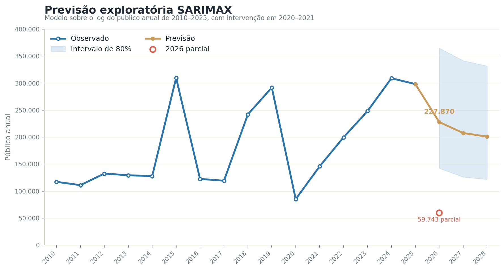

Painel executivo
O público da Sala São Paulo em números
Uma leitura estática da evolução anual, das metas, da eficiência dos concertos, do choque da pandemia e da projeção exploratória da série.
2005–2025 fechados
2026 parcial
Resumo da trajetória
Recuperação consolidada, com leve recuo em 2025
O público total caiu 70,8% em 2020, voltou a crescer nos anos seguintes e chegou a 308.976 pessoas em 2024, 5,9% acima de 2019. Em 2025, o total fechou em 298.279: queda de 3,5% frente a 2024, mas ainda 2,2% acima do nível pré-pandemia de 2019.
Público em 2025
298.279
−3,5% vs. 2024
Conceito estatístico
Estatística descritiva e dispersão: média, mediana, desvio-padrão e coeficiente de variação resumem o nível e a instabilidade do público ao longo do tempo.
Série temporal
Média móvel · tendência
Evolução do público anual
A linha observada mostra os totais anuais; a média móvel de três anos suaviza oscilações e ajuda a enxergar o movimento de fundo.

Expansão inicial
O valor de 2005 é muito menor que os anos seguintes. Entre 2006 e 2009, o público anual permanece na faixa de 120 mil a 150 mil pessoas, acompanhando uma programação mais ampla que a registrada no início da série.
Ruptura em 2020
A pandemia interrompe a trajetória: o público passa de 291.750 em 2019 para 85.138 em 2020, a maior queda anual do período analisado.
Retomada e estabilização
A recuperação ganha força a partir de 2021. O pico recente ocorre em 2024; 2025 recua levemente, mas continua acima do total pré-pandemia de 2019.
Ver a série anual completa
| Ano | Público | Ano | Público | Ano | Público |
|---|---|---|---|---|---|
| 2005 | 26.980 | 2012 | 132.487 | 2019 | 291.750 |
| 2006 | 120.000 | 2013 | 129.364 | 2020 | 85.138 |
| 2007 | 143.000 | 2014 | 127.787 | 2021 | 145.831 |
| 2008 | 149.700 | 2015 | 309.640 | 2022 | 199.650 |
| 2009 | 144.800 | 2016 | 122.561 | 2023 | 248.020 |
| 2010 | 117.162 | 2017 | 119.214 | 2024 | 308.976 |
| 2011 | 111.015 | 2018 | 242.154 | 2025 | 298.279 |
| 2026 | 59.743 (parcial) | ||||
Distribuição
Quartis · IQR · outliers
Como os valores anuais se distribuem
O histograma mostra a frequência dos intervalos de público; o boxplot resume quartis, amplitude e possíveis valores extremos.

Q1120.000
Mediana143.000
Q3242.154
IQR122.154
Leitura: a média de 170.167 fica acima da mediana de 143.000, sinal de assimetria à direita. Pela regra de Tukey (1,5 × IQR), nenhum ano é classificado formalmente como outlier, embora 2020 seja uma ruptura histórica evidente quando analisado no tempo.
Planejamento e entrega
Gap · taxa de atingimento
Meta de público e execução dos concertos
A comparação destaca o desvio entre o que foi planejado e o que foi realizado, tanto em público quanto em quantidade de apresentações.


111,8% em média
Nos dez anos com meta disponível, o público superou a meta em oito. Em 2025, o atingimento foi de 117,0%.
2020 e 2021
Os únicos anos abaixo da meta foram justamente os mais afetados pela pandemia e pelas restrições às atividades presenciais.
102,8%
No acumulado dos anos comparáveis, foram realizados 84 concertos a mais que o total inicialmente planejado.
Eficiência
Razões · correlação de Pearson
Público médio por concerto
A razão entre público total e concertos realizados permite separar crescimento de volume de apresentações e desempenho médio por evento.

Mais concertos diluem a média?
Na série disponível, a correlação é negativa e moderada: r = −0,526, com p = 0,0208. Isso indica que anos com mais apresentações tendem a apresentar menor público médio por concerto.
Importante
Correlação não prova causalidade. Escopo da programação, capacidade dos espaços, eventos gratuitos, duplicidade de registros anuais e mudanças de cobertura também influenciam a razão.
Análise de intervenção
Teste de hipótese · intervenção
O impacto da pandemia
A comparação de janelas resume o antes e o depois; o SARIMAX tenta isolar o choque específico de 2020–2021 dentro da dinâmica temporal.

Interpretação: a queda de 2020 é inequívoca. Já a diferença entre as médias das janelas pré e pós não aparece como estatisticamente significativa a 5%, porque há poucos anos e os totais recentes também refletem mudanças de cobertura e categorias registradas. O resultado deve ser tratado como exploratório.
Projeção exploratória
SARIMAX · intervalo de confiança
Previsão do público anual
O modelo selecionado considera a dependência temporal e uma variável de intervenção para 2020–2021. A previsão representa um ano completo, não o valor parcial observado em 2026.

Limitação da previsão
A série tem apenas um ponto por ano e apresenta mudanças de escopo. Por isso, o intervalo é largo e a projeção serve como exercício estatístico, não como compromisso operacional.
Transparência
Qualidade de ajuste
Ficha técnica e comparação de modelos
Resumo do recorte, das escolhas estatísticas e das métricas usadas para justificar o modelo apresentado.
Base e período
- Fonte
- Sala São Paulo / OSESP — série oficial fornecida
- Anos fechados
- 2005–2025 (n = 21)
- Ano parcial
- 2026, 1º quadrimestre
- Critério do total
- Soma literal dos registros de público por ano
Modelo escolhido
- Especificação
- SARIMAX(1,0,0) no log da série
- Intervenção
- Dummy para 2020–2021
- AIC
- 20,5
- AICc
- 24,2
Modelo de referência
- Regressão linear
- 2010–2025
- R²
- 0,338
- Tendência estimada
- +10.041 pessoas/ano
- p-valor
- 0,018
✓
Por que o SARIMAX foi mantido?
A regressão resume uma tendência média, mas não trata a dependência entre anos nem o choque temporário da pandemia. O SARIMAX incorpora esses dois elementos e reproduz exatamente as métricas de ajuste apresentadas: AIC 20,5, AICc 24,2 e efeito estimado de −48,4% em 2020–2021.
Nota de comparabilidade: a quantidade e o escopo das categorias registradas mudam entre os anos. Assim, variações do total não devem ser interpretadas apenas como mudança de demanda. Os resultados são adequados para análise educacional e exploratória.